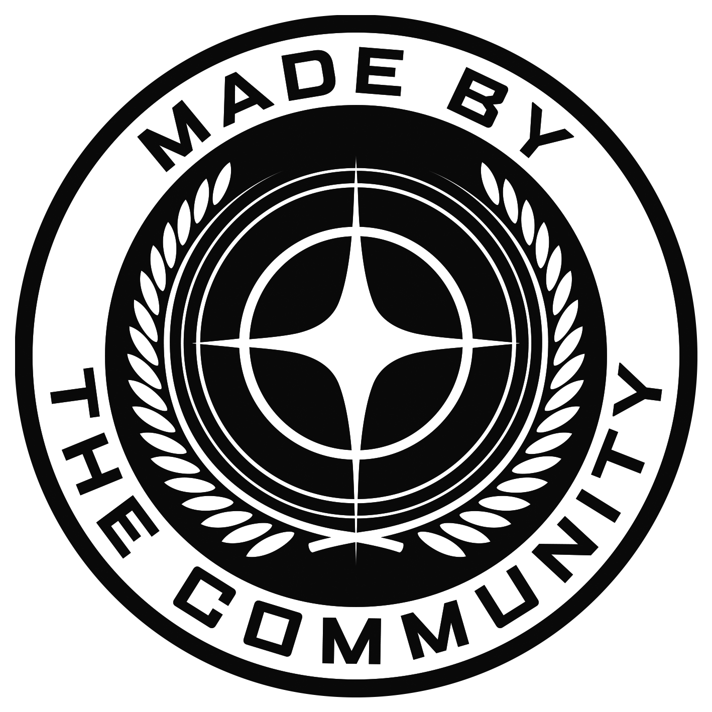

This is an unofficial Star Citizen fan site, not affiliated with the Cloud Imperium group of companies. All content on this site not authored by its host or users are property of their respective owners. Star Citizen®, Roberts Space Industries® and Cloud Imperium® are registered trademarks of Cloud Imperium Rights LLC.
Xharig · Impressum · Datenschutz